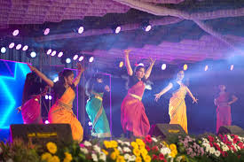
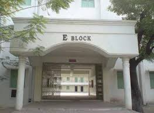
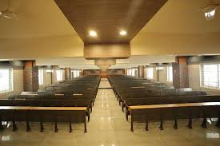
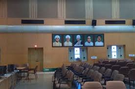
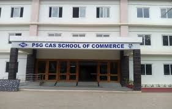

PSG College of Arts and Science (PSGCAS) offers a vibrant cultural scene, fostering student talent and creativity through various events. The college's Manavar Manram (Students Council) actively organizes events like the intra-college competition HEARTBEAT and the inter-collegiate fest EUPHORIA. These events provide platforms for students to showcase their skills in diverse areas such as music, dance, drama, and literary arts. Additionally, PSG CAS celebrates cultural festivals like Pongal, with students participating in traditional attire, music, dance, and other festive activities. The college also hosts events like "Curry Masala," a food festival and cultural fete, demonstrating its commitment to celebrating diverse cultural expressions.
PSG College of Arts and Science boasts a robust infrastructure designed to support both academic and extracurricular activities. The campus includes well-equipped classrooms with audio-visual facilities, a central instrumentation facility for research, and a media lab. According to PSG College of Arts and Science, separate hostels for boys and girls, a well-stocked library with digital access, and a spacious auditorium are also available. Additionally, the college provides a canteen, sports facilities, and a health center. The infrastructure also includes Wi-Fi access, a browsing center, and adequate parking.




